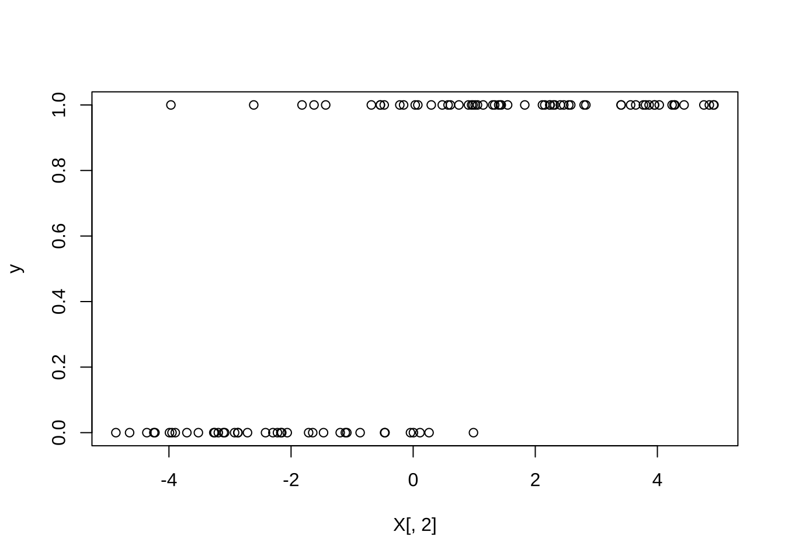
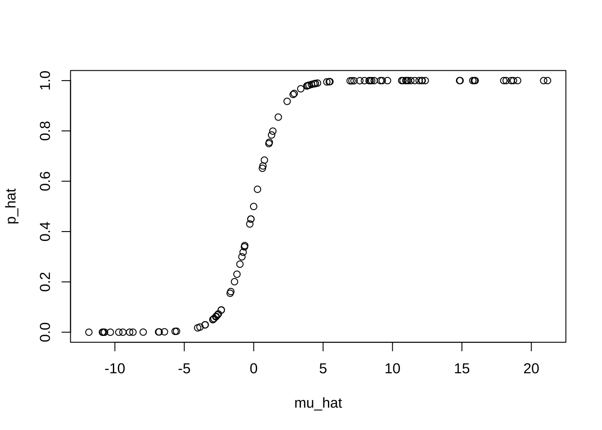
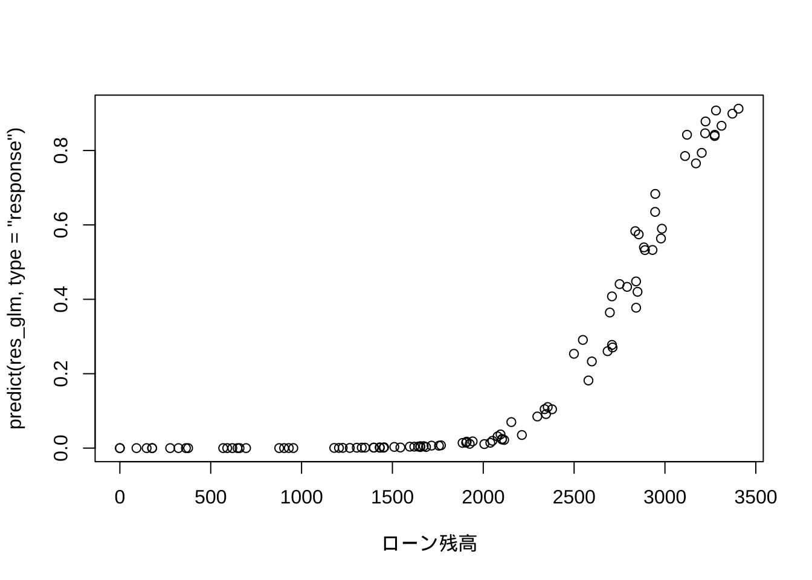
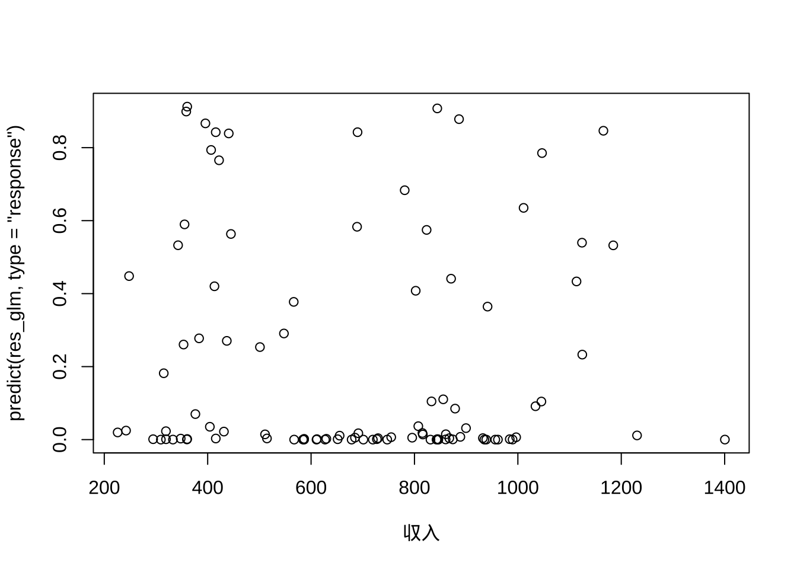
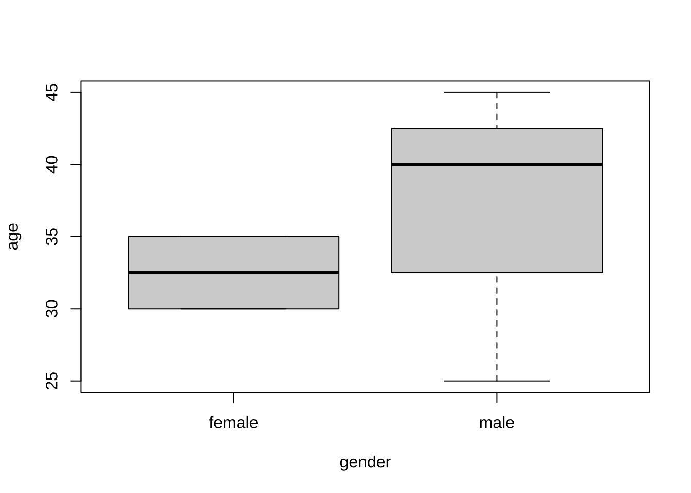
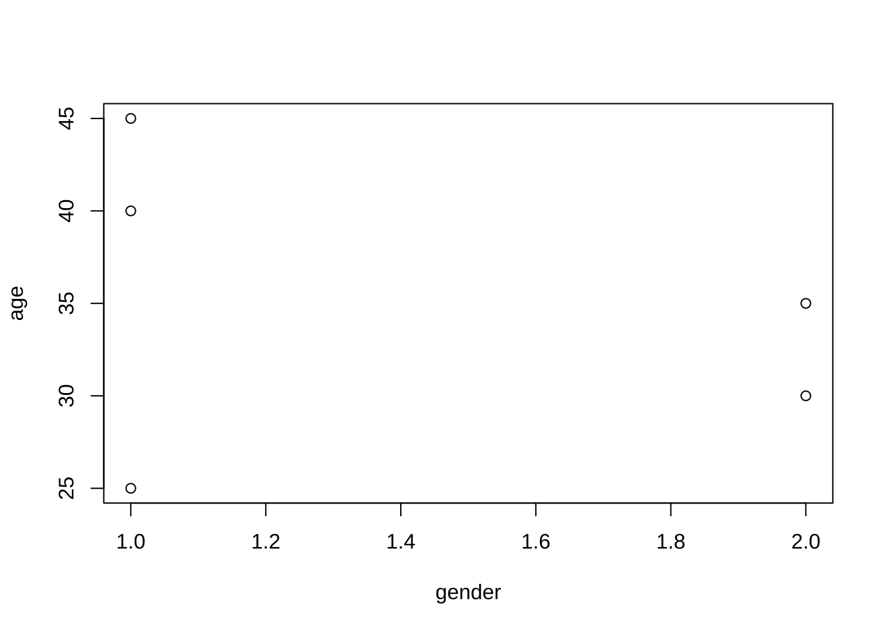
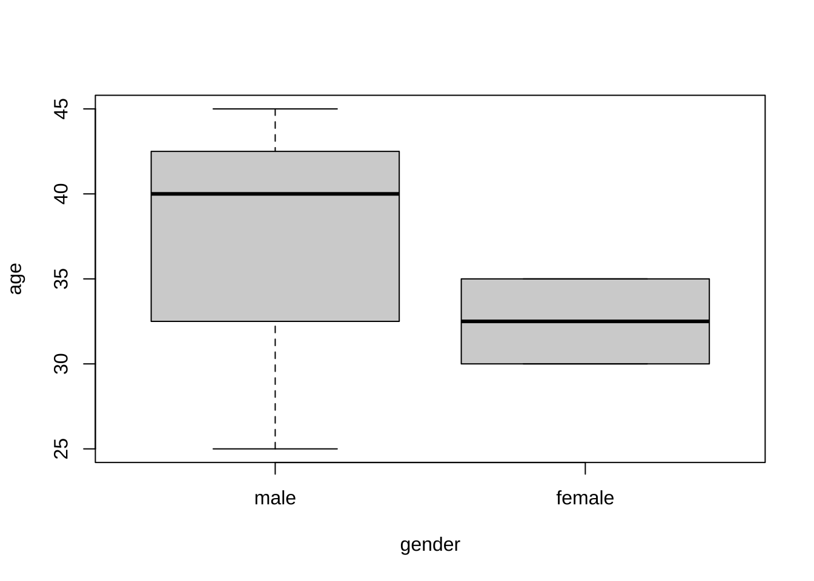

6 ロジット/ブロビット回帰分析
6.1 ロジット回帰分析の基本操作
ロジットモデル: シミュレーションデータ
- シミュレーションデータの生成
set.seed(1)
n <- 100
p <- 2
a <- 1.2
b <- c(0.5, 1.5)
X <- matrix(runif(n * p, -5, 5), ncol = p) # 予測変数 (X1, X2)
colnames(X) <- paste0("X", 1:p)
mu <- a + X %*% b # 線形予測子
pi <- exp(mu)/(1 + exp(mu)) # ロジスティック変換
y <- rbinom(n, 1, pi) # 発生頻度 (ランダム)
plot(X[, 1], y)

- ロジット回帰分析の実行
# ロジット回帰
res_glm <- glm(y ~ X, family = binomial)
summary(res_glm)
#>
#> Call:
#> glm(formula = y ~ X, family = binomial)
#>
#> Deviance Residuals:
#> Min 1Q Median 3Q Max
#> -1.79161 -0.08440 0.00084 0.09128 2.36307
#>
#> Coefficients:
#> Estimate Std. Error z value Pr(>|z|)
#> (Intercept) 2.5815 0.8647 2.985 0.002831 **
#> XX1 1.1494 0.3434 3.347 0.000818 ***
#> XX2 2.7630 0.7509 3.680 0.000233 ***
#> ---
#> Signif. codes: 0 '***' 0.001 '**' 0.01 '*' 0.05 '.' 0.1 ' ' 1
#>
#> (Dispersion parameter for binomial family taken to be 1)
#>
#> Null deviance: 133.750 on 99 degrees of freedom
#> Residual deviance: 34.478 on 97 degrees of freedom
#> AIC: 40.478
#>
#> Number of Fisher Scoring iterations: 8- 予測
# 予測 (内挿)
mu_hat <- predict(res_glm) # μ
p_hat <- predict(res_glm, type = "response") # 発生頻度
head(data.frame(y, p_hat))
#> y p_hat
#> 1 1 0.9846543
#> 2 0 0.0500027
#> 3 0 0.0507452
#> 4 1 1.0000000
#> 5 1 0.9448650
#> 6 0 0.3178520
plot(mu_hat, p_hat)
- 係数の信頼区間
6.2 データ分析例
データセット (1): 販売プロモーション・データ (仮想)
- convdat.csv, 8件
- 商品 (product): A/B
- 世代 (genZ): Yes/No
- K-pop好き (Kpop): Yes/No
- DM送付数 (n.tot): 人
- 購入人数 (n.conv): 人
- 注) product--Kpopは, 関数read.csv()でそのまま読み込むと文字型変数となり, 因子型にはならない. - データ読み込み
conv_dat1 <- read.csv("convdat.txt", skip = 1)
# 注) デフォルトはstringsAsFactors = F (文字列を因子型変数に変換せずに読み込む)
# conv_dat1 <- read.csv('convdat.txt', skip = 2, stringsAsFactors = T)
attach(conv_dat1)- ロジット回帰実行
- 異なるデータ形式への対応
# データ形式-1 '成功回数'、'失敗回数'の2列
conv_tbl <- cbind(n.conv, n.tot - n.conv)
res_glm1 <- glm(conv_tbl ~ product + genZ + Kpop, family = binomial)
summary(res_glm1)
#>
#> Call:
#> glm(formula = conv_tbl ~ product + genZ + Kpop, family = binomial)
#>
#> Deviance Residuals:
#> 1 2 3 4 5 6 7 8
#> 0.11781 0.18151 0.15625 -1.18807 -0.35661 -0.40158 0.78239 0.09386
#>
#> Coefficients:
#> Estimate Std. Error z value Pr(>|z|)
#> (Intercept) -2.07205 0.33431 -6.198 5.72e-10 ***
#> productB -0.07844 0.26926 -0.291 0.77082
#> genZYes 0.82333 0.27607 2.982 0.00286 **
#> KpopYes 0.61585 0.35132 1.753 0.07961 .
#> ---
#> Signif. codes: 0 '***' 0.001 '**' 0.01 '*' 0.05 '.' 0.1 ' ' 1
#>
#> (Dispersion parameter for binomial family taken to be 1)
#>
#> Null deviance: 15.2547 on 7 degrees of freedom
#> Residual deviance: 2.3921 on 4 degrees of freedom
#> AIC: 36.198
#>
#> Number of Fisher Scoring iterations: 4
res_glm2 <- glm(conv_tbl ~ genZ + Kpop, binomial)
summary(res_glm2)
#>
#> Call:
#> glm(formula = conv_tbl ~ genZ + Kpop, family = binomial)
#>
#> Deviance Residuals:
#> 1 2 3 4 5 6 7 8
#> 0.16285 0.20322 0.28582 -1.22028 -0.54755 -0.32113 0.66014 0.01463
#>
#> Coefficients:
#> Estimate Std. Error z value Pr(>|z|)
#> (Intercept) -2.0904 0.3286 -6.361 2e-10 ***
#> genZYes 0.8235 0.2760 2.983 0.00285 **
#> KpopYes 0.6100 0.3507 1.739 0.08200 .
#> ---
#> Signif. codes: 0 '***' 0.001 '**' 0.01 '*' 0.05 '.' 0.1 ' ' 1
#>
#> (Dispersion parameter for binomial family taken to be 1)
#>
#> Null deviance: 15.2547 on 7 degrees of freedom
#> Residual deviance: 2.4775 on 5 degrees of freedom
#> AIC: 34.284
#>
#> Number of Fisher Scoring iterations: 4
res_glm0 <- glm(conv_tbl ~ 1, binomial) # 切片項のみ
summary(res_glm0)
#>
#> Call:
#> glm(formula = conv_tbl ~ 1, family = binomial)
#>
#> Deviance Residuals:
#> Min 1Q Median 3Q Max
#> -1.6946 -1.0354 -0.5135 0.7712 2.2549
#>
#> Coefficients:
#> Estimate Std. Error z value Pr(>|z|)
#> (Intercept) -1.3950 0.1205 -11.58 <2e-16 ***
#> ---
#> Signif. codes: 0 '***' 0.001 '**' 0.01 '*' 0.05 '.' 0.1 ' ' 1
#>
#> (Dispersion parameter for binomial family taken to be 1)
#>
#> Null deviance: 15.255 on 7 degrees of freedom
#> Residual deviance: 15.255 on 7 degrees of freedom
#> AIC: 43.061
#>
#> Number of Fisher Scoring iterations: 4
anova(res_glm2, test = "Chisq") # カイ2乗検定 (test = 'LRT'でも可)
#> Analysis of Deviance Table
#>
#> Model: binomial, link: logit
#>
#> Response: conv_tbl
#>
#> Terms added sequentially (first to last)
#>
#>
#> Df Deviance Resid. Df Resid. Dev Pr(>Chi)
#> NULL 7 15.2547
#> genZ 1 9.4371 6 5.8175 0.002126 **
#> Kpop 1 3.3400 5 2.4775 0.067615 .
#> ---
#> Signif. codes: 0 '***' 0.001 '**' 0.01 '*' 0.05 '.' 0.1 ' ' 1
anova(res_glm2, res_glm0, test = "Chisq") # 同
#> Analysis of Deviance Table
#>
#> Model 1: conv_tbl ~ genZ + Kpop
#> Model 2: conv_tbl ~ 1
#> Resid. Df Resid. Dev Df Deviance Pr(>Chi)
#> 1 5 2.4775
#> 2 7 15.2547 -2 -12.777 0.001681 **
#> ---
#> Signif. codes: 0 '***' 0.001 '**' 0.01 '*' 0.05 '.' 0.1 ' ' 1# データ形式-2 '成功率'の指定
prop_conv <- n.conv/n.tot
res_glm1_2 <- glm(prop_conv ~ product + genZ + Kpop, binomial, weights = n.tot)
summary(res_glm1_2)
#>
#> Call:
#> glm(formula = prop_conv ~ product + genZ + Kpop, family = binomial,
#> weights = n.tot)
#>
#> Deviance Residuals:
#> 1 2 3 4 5 6 7 8
#> 0.11781 0.18151 0.15625 -1.18807 -0.35661 -0.40158 0.78239 0.09386
#>
#> Coefficients:
#> Estimate Std. Error z value Pr(>|z|)
#> (Intercept) -2.07205 0.33431 -6.198 5.72e-10 ***
#> productB -0.07844 0.26926 -0.291 0.77082
#> genZYes 0.82333 0.27607 2.982 0.00286 **
#> KpopYes 0.61585 0.35132 1.753 0.07961 .
#> ---
#> Signif. codes: 0 '***' 0.001 '**' 0.01 '*' 0.05 '.' 0.1 ' ' 1
#>
#> (Dispersion parameter for binomial family taken to be 1)
#>
#> Null deviance: 15.2547 on 7 degrees of freedom
#> Residual deviance: 2.3921 on 4 degrees of freedom
#> AIC: 36.198
#>
#> Number of Fisher Scoring iterations: 4# プロビット回帰
res_glm2_p <- glm(conv_tbl ~ genZ + Kpop, family = binomial(link = "probit")) # probit
summary(res_glm2_p)
#>
#> Call:
#> glm(formula = conv_tbl ~ genZ + Kpop, family = binomial(link = "probit"))
#>
#> Deviance Residuals:
#> 1 2 3 4 5 6 7 8
#> 0.17291 0.15015 0.27674 -1.24447 -0.55358 -0.29829 0.67558 0.02009
#>
#> Coefficients:
#> Estimate Std. Error z value Pr(>|z|)
#> (Intercept) -1.2285 0.1742 -7.053 1.75e-12 ***
#> genZYes 0.4814 0.1644 2.929 0.0034 **
#> KpopYes 0.3343 0.1886 1.773 0.0763 .
#> ---
#> Signif. codes: 0 '***' 0.001 '**' 0.01 '*' 0.05 '.' 0.1 ' ' 1
#>
#> (Dispersion parameter for binomial family taken to be 1)
#>
#> Null deviance: 15.255 on 7 degrees of freedom
#> Residual deviance: 2.530 on 5 degrees of freedom
#> AIC: 34.336
#>
#> Number of Fisher Scoring iterations: 3# ロジット回帰 (再実行)
res_glm2 <- glm(conv_tbl ~ genZ + Kpop, binomial) # simpler, logit
summary(res_glm2)
#>
#> Call:
#> glm(formula = conv_tbl ~ genZ + Kpop, family = binomial)
#>
#> Deviance Residuals:
#> 1 2 3 4 5 6 7 8
#> 0.16285 0.20322 0.28582 -1.22028 -0.54755 -0.32113 0.66014 0.01463
#>
#> Coefficients:
#> Estimate Std. Error z value Pr(>|z|)
#> (Intercept) -2.0904 0.3286 -6.361 2e-10 ***
#> genZYes 0.8235 0.2760 2.983 0.00285 **
#> KpopYes 0.6100 0.3507 1.739 0.08200 .
#> ---
#> Signif. codes: 0 '***' 0.001 '**' 0.01 '*' 0.05 '.' 0.1 ' ' 1
#>
#> (Dispersion parameter for binomial family taken to be 1)
#>
#> Null deviance: 15.2547 on 7 degrees of freedom
#> Residual deviance: 2.4775 on 5 degrees of freedom
#> AIC: 34.284
#>
#> Number of Fisher Scoring iterations: 4
# モデル診断 plot(res_glm2)- 予測
# 予測
predict(res_glm2) # 対数オッズ
#> 1 2 3 4 5 6 7 8
#> -2.090427 -1.266936 -1.480454 -1.266936 -1.480454 -0.656963 -0.656963 -2.090427
p_hat <- predict(res_glm2, type = "response") # 確率
data.frame(conv_dat1, p_hat)
#> product genZ Kpop n.tot n.conv p_hat
#> 1 A No No 60 7 0.1100307
#> 2 A Yes No 8 2 0.2197822
#> 3 A No Yes 186 36 0.1853588
#> 4 B Yes No 3 0 0.2197822
#> 5 B No Yes 86 14 0.1853588
#> 6 A Yes Yes 50 16 0.3414222
#> 7 B Yes Yes 22 9 0.3414222
#> 8 B No No 18 2 0.1100307
# 注) 説明変数が因子型(factor)でない場合, 以下エラーとなる (read.csvで,
# stringsAsFactors = Tを指定していた場合はOK) plot(genZ, predict(res_glm2, type
# = 'response')) plot(cat, predict(res_glm2, type = 'response')) すなわち,
# 文字列型のままの場合, は因子型に一旦変換が必要 plot(factor(genZ),
# predict(res_glm2, type = 'response')) plot(factor(cat), predict(res_glm2,
# type = 'response'))
# 説明変数が数値型変数ならば、logistic曲線を描く- 係数の信頼区間
# 信頼区間
confint(res_glm1_2) # 95%信頼区間 (デフォルト)
#> 2.5 % 97.5 %
#> (Intercept) -2.78200808 -1.4598384
#> productB -0.61946141 0.4396708
#> genZYes 0.27372310 1.3592877
#> KpopYes -0.03750972 1.3520115
confint(res_glm1_2, level = 0.9) # 90%信頼区間
#> 5 % 95 %
#> (Intercept) -2.65972908 -1.5530190
#> productB -0.53045473 0.3574811
#> genZYes 0.36344375 1.2736384
#> KpopYes 0.06339516 1.2264225
detach()データセット (2): 個人ローン・デフォルト・データ (仮想)
- default.csv, 100件
- デフォルト (1/0)
- ローン残高 (万円)
- 収入 (万円)
- 職種 (A/B)- データ読み込み
- ロジット回帰
# ロジット回帰
res_glm <- glm(デフォルト ~ ローン残高 + 収入 + 職種, family = binomial)
summary(res_glm)
#>
#> Call:
#> glm(formula = デフォルト ~ ローン残高 + 収入 + 職種,
#> family = binomial)
#>
#> Deviance Residuals:
#> Min 1Q Median 3Q Max
#> -2.20685 -0.21788 -0.04981 -0.00258 2.84704
#>
#> Coefficients:
#> Estimate Std. Error z value Pr(>|z|)
#> (Intercept) -1.336e+01 3.505e+00 -3.811 0.000138 ***
#> ローン残高 4.708e-03 1.224e-03 3.846 0.000120 ***
#> 収入 -9.227e-04 2.345e-03 -0.394 0.693925
#> 職種B 9.713e-01 1.445e+00 0.672 0.501434
#> ---
#> Signif. codes: 0 '***' 0.001 '**' 0.01 '*' 0.05 '.' 0.1 ' ' 1
#>
#> (Dispersion parameter for binomial family taken to be 1)
#>
#> Null deviance: 102.791 on 99 degrees of freedom
#> Residual deviance: 46.971 on 96 degrees of freedom
#> AIC: 54.971
#>
#> Number of Fisher Scoring iterations: 8
plot(ローン残高, predict(res_glm, type = "response"))

- プロビット回帰
# プロビット回帰
res_glm_p <- glm(デフォルト ~ ローン残高 + 収入 + 職種, family = binomial(link = "probit"))
summary(res_glm_p)
#>
#> Call:
#> glm(formula = デフォルト ~ ローン残高 + 収入 + 職種,
#> family = binomial(link = "probit"))
#>
#> Deviance Residuals:
#> Min 1Q Median 3Q Max
#> -2.10245 -0.22078 -0.02316 -0.00001 2.80240
#>
#> Coefficients:
#> Estimate Std. Error z value Pr(>|z|)
#> (Intercept) -7.0233825 1.6903093 -4.155 3.25e-05 ***
#> ローン残高 0.0024920 0.0005893 4.229 2.35e-05 ***
#> 収入 -0.0006478 0.0013082 -0.495 0.620
#> 職種B 0.6549554 0.8035424 0.815 0.415
#> ---
#> Signif. codes: 0 '***' 0.001 '**' 0.01 '*' 0.05 '.' 0.1 ' ' 1
#>
#> (Dispersion parameter for binomial family taken to be 1)
#>
#> Null deviance: 102.79 on 99 degrees of freedom
#> Residual deviance: 47.81 on 96 degrees of freedom
#> AIC: 55.81
#>
#> Number of Fisher Scoring iterations: 8
## 結果の比較: glm vs lm res_glm_normal <- glm(デフォルト ~ ローン残高 + 収入 +
## 職種, family = gaussian) summary(res_glm_normal) res_lm <- lm(デフォルト ~
## ローン残高 + 収入 + 職種) anova(res_lm)- 予測
# 予測 (新しいデータセットに対して)
newdat <- data.frame(ローン残高 = c(100, 500, 1000, 10000), 収入 = 30000,
職種 = "A")
predict(res_glm, newdata = newdat, type = "response")
#> 1 2 3 4
#> 2.220446e-16 2.220446e-16 2.220446e-16 9.976404e-01- 係数の信頼区間
6.3 疑似R2の計算
# ロジット回帰
res_glm <- glm(デフォルト ~ ローン残高 + 収入 + 職種, family = binomial,
data = default)
# summary(res_glm)パッケージDescToolsの利用
DescTools::PseudoR2()
- usage: PseudoR2(x, which = NULL)
- which: 計算したい疑似R2.
選択肢: "McFadden"(デフォルト), "McFaddenAdj", "CoxSnell", "Nagelkerke", "AldrichNelson", "VeallZimmermann", "Efron", "McKelveyZavoina", "Tjur", "all".# 疑似R2の計算
library(DescTools)
PseudoR2(res_glm) # McFadden (デフォルト)
#> McFadden
#> 0.5430468
PseudoR2(res_glm, which = "CoxSnell") # Cox-Snell
#> CoxSnell
#> 0.4277647
PseudoR2(res_glm, which = "Nagelkerke") # Nagelkerke
#> Nagelkerke
#> 0.6660436
PseudoR2(res_glm, which = "all")
#> McFadden McFaddenAdj CoxSnell Nagelkerke AldrichNelson
#> 0.5430468 0.4652192 0.4277647 0.6660436 0.3582359
#> VeallZimmermann Efron McKelveyZavoina Tjur AIC
#> 0.7067438 0.5736644 0.8515845 0.5589555 54.9708332
#> BIC logLik logLik0 G2
#> 65.3915139 -23.4854166 -51.3956671 55.8205010パッケージpsclの利用
pscl::pR2()
- 以下を出力:
- llh: The log-likelihood from the fitted model
- llhNull: The log-likelihood from the intercept-only restricted model
- G2: Minus two times the difference in the log-likelihoods
- McFadden: McFadden's pseudo r-squared
- r2ML: Maximum likelihood pseudo r-squared
- r2CU: Cragg and Uhler's pseudo r-squared6.4 関数factor()について
Rの初心者向けに関数factor()の使い方に関する簡単な説明を行う.
Rでのfactor関数の使い方
関数factor()は, カテゴリーデータ（文字列や整数を値に持つベクトル）を因子型（factor）に変換するために使用される.
4. 因子の利用
Rのデータフレーム (data.frame) は, 行列の形をしているが, 実際は, 長さは等しいものの 異なる”データ型”のベクトルを要素に持つリスト (list) である. 因子に変換されたデータは, データフレーム内でカテゴリー変数として保持することで, 統計解析や可視化などで利用される.
# サンプルのカテゴリーデータ
gender <- c("male", "female", "female", "male", "male")
age <- c(25, 30, 35, 40, 45)
# データフレームの作成
df <- data.frame(gender = factor(gender), age = age)
df
#> gender age
#> 1 male 25
#> 2 female 30
#> 3 female 35
#> 4 male 40
#> 5 male 45
# データフレームの要約
summary(df)
#> gender age
#> female:2 Min. :25
#> male :3 1st Qu.:30
#> Median :35
#> Mean :35
#> 3rd Qu.:40
#> Max. :45
# 箱ひげ図
plot(age ~ gender, data = df)
Rにおける標準的な統計解析や可視化を行う場合には,
関数factor()を使うことで, カテゴリー変数はR内部で適正に処理されるため
一変数のままで使用することができる. すなわち, 通常,
カテゴリーの水準に対応するダミー変数を作る作業は不要である.
関数lm()やglm()等においては, 文字列を値に持つカテゴリー変数は明示的にfactor()を使って因子型に
変換せずとも, Rは因子型と解釈して関数を実行するが, もしそのカテゴリー変数が整数値 (例, gender <- c(1, 2, 2, 1, 1)) を持つ場合には, factor()を使って
変換しないと, 意図とは異なる結果やエラーを生じることになる
# カテゴリーデータが整数値で記録されている場合
gender <- c(1, 2, 2, 1, 1)
age <- c(25, 30, 35, 40, 45)
# データフレームの作成
df <- data.frame(gender = gender, age = age)
df
#> gender age
#> 1 1 25
#> 2 2 30
#> 3 2 35
#> 4 1 40
#> 5 1 45
# データフレームの要約?
summary(df)
#> gender age
#> Min. :1.0 Min. :25
#> 1st Qu.:1.0 1st Qu.:30
#> Median :1.0 Median :35
#> Mean :1.4 Mean :35
#> 3rd Qu.:2.0 3rd Qu.:40
#> Max. :2.0 Max. :45
# 箱ひげ図?
plot(age ~ gender, data = df)
# 適切な処理: 関数factor()の使用
df <- data.frame(gender = factor(gender, levels = c("1", "2"), labels = c("male",
"female")), age = age)
df
#> gender age
#> 1 male 25
#> 2 female 30
#> 3 female 35
#> 4 male 40
#> 5 male 45
# データフレームの要約
summary(df)
#> gender age
#> male :3 Min. :25
#> female:2 1st Qu.:30
#> Median :35
#> Mean :35
#> 3rd Qu.:40
#> Max. :45
# 箱ひげ図
plot(age ~ gender, data = df)